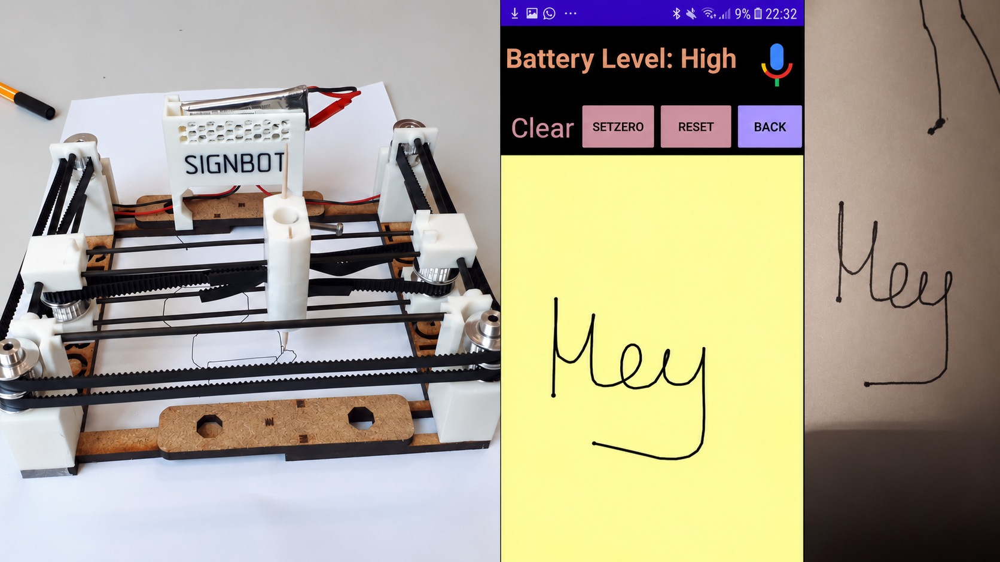

A professor at MIT once asked me what the most complex thing I’d ever built was. If I had to answer today, I’d definitely say the Orcahand v2. I know every single rounded edge and design choice behind the hand, wrote a major part of the code that controls it (check out our GitHub with 600+ stars), and helped propel dexterous manipulation research across academia and industry.
Orcahand v2 Release Video
When we started building the first version of this hand in ETH Zurich’s
Real-World Robotics class, taught by Prof. Robert Katzschmann, all we wanted was to win the final challenge against the other student teams. But when our hand prototype scored 100/100 points, we realized that our 17-DoF, tendon-driven approach could help fill a longstanding gap in robotics research. Back in 2024, labs often had to choose between expensive, less robust anthropomorphic hands like the Shadow Hand and inexpensive but bulky, non-anthropomorphic hands like the Allegro Hand. This limited dexterous manipulation research, so we decided to turn our coursework prototype into a more professional academic research platform: the Orcahand v1.
Orcahand Prototype (v0) for RWR Challenge
With v1, our goal was to create an affordable (< CHF 2,000), open-source platform that people could easily build, repair, and extend with custom sensors, motors, or morphologies. We made it robust, dexterous, and precise enough to support SOTA reinforcement and imitation-learning research on the hand, and published our novel design innovations in an IROS paper, which kicked off an entirely new chapter for us. Suddenly, emails started pouring in from people all around the world asking if they could buy this hand from us. We began building and selling hands to institutions like Berkeley and Toyota Research Institute, and our student project slowly started turning into a bootstrapped startup with real revenue. I set up our online shop during MIT spring break, presented the hand at conferences including ICRA and the AI for Good Summit, helped grow it into a recognized name in robotics, closed deals with companies like Google, hired our first three employees, and built and shipped many of the first hands myself.
Orcahand v1 Paper video
Throughout the growth of our company, we listened to feedback from people using the v1 and incorporated it into a much-improved, more product-level Orcahand v2. This latest design offers custom tactile- and joint-sensing configurations, more human-like proportions, easier assembly and repair, support for a wider range of motors, and additional software for teleoperation and policy learning. The final v2 release happened in a 48-hour sprint with almost no sleep and went viral with 350k+ views on . Watching Orcahand grow from the ground up into a product known and used around the world remains one of my proudest achievements. Visit our website (the first one I ever designed) for more info!
For my ETH semester thesis, I built HAPPI (Haptic Assistance for Pathwayfinding and Personal Independence), a compact, wearable LiDAR-based haptic feedback wristband for visually impaired people.
HAPPI wristband configurations - The LiDAR sits on a ring that can be rotated for more controlled environmental scans.Hardware Integration - The battery, LRA motors, LiDAR, and MCU fit inside a small, soft, impact-protected wristband, with a BOM of CHF 130.
Designed mainly as an extension to a white cane, it warns users about obstacles beyond the cane’s reach, including those above the belt. A miniature LiDAR sensor measures the distance to nearby objects, and the wristband turns that information into vibration cues to support local navigation. I also built a companion app that connects to HAPPI over BLE and provides global, route-based navigation, with haptic cues when the user strays from the route.
HAPPI navigation app - Purpose-built for blind people, with mainly haptic and audio feedback and large UI elements.Haptic route guidance - HAPPI can also help with longer, unfamiliar routes, which can be challenging for visually impaired people.
I may still publish this work, but I haven’t yet found the time to arrange the ethical approval in Switzerland needed for a proper study with blind participants. I’m happy to share my design files and code if you’re interested in building on the project or testing it. There’s a real need for a device that helps visually impaired people detect obstacles beyond their cane’s reach without strapping on a bulky device to their chest or head :) Read the project report for more details!
In my bachelor’s thesis, I investigated how we could make hands perform dynamic dexterous manipulation, i.e., tasks that require not only precision but also high speed (a problem frontier-level VLAs still struggle with today).
For this, I looked into how a fixed tendon-driven Faive hand could learn to throw and catch a ball. Since this task requires immense precision, perfect timing, and high speeds, I first benchmarked its latency, finger-angle accuracy, and tendon dynamics to get a proper sys ID and mitigate sim2real gaps. I then used those measurements to improve the hand’s representation in sim and train dynamic RL policies in Isaac Gym. I also built a real-time MoCap pipeline to track objects at very high speeds for closed-loop dexterous manipulation.
Ground-truth joint angles with round checkerboardsSystem identification with AprilTags
To measure the fingers’ tracking error and latency, I first used round checkerboard markers as visual ground truth, then switched to AprilTags for more accurate tracking during fast movements. This sys ID let me separate mechanical delays, such as tendon slack and inertia, from delays introduced by the code. It also exposed an inefficient matrix inversion in the low-level EKF control and allowed me to substantially reduce latency variability.
Tuning passive tendon dynamicsTuning active tendon dynamics
I also fine-tuned the simulated tendons’ Kp and Kd via grid searches, comparing them against measurements from real-world MoCap experiments. I matched both the active response to a commanded finger movement and the passive response when a ball dropped onto the finger. In the end, the same parameter pair closely reproduced both behaviors in simulation.
PPO curriculum learning in Isaac Gym with domain randomizationOpen-loop ball-flipping rollout
I trained a diverse array of RL policies in Isaac Gym and used curriculum learning to introduce latency and accuracy randomization to the system. Running an open-loop policy on the physical hand showed that throwing and catching the ball was possible, but the catch depended on near-perfect timing, as the hand’s base remained immobile. To make the behavior repeatable, the policy needed real-time ball tracking and closed-loop control.
Real-time sphere tracking with RANSACMore markers for robust tracking toward closed-loop policies
For that, I built a custom ball whose transform we could estimate relative to the hand’s coordinate frame using RANSAC, even under heavy occlusion during grasping. Although I managed to train simple in-hand reorientation policies like the one on top, the Faive hand’s tendon slack and unreliable hardware made consistent performance difficult. That experience motivated me to build my own tendon-driven hand (the Orcahand ↑) with better accuracy and reliability during my Master’s :)
As a BSc student, I initiated the MetaSuit project and led an eight-person team for a year to build it.
MetaSuit aimed to create a soft, lightweight, natural-feeling full-body suit for mixed reality, motion capture, and medical applications. It combined real-time movement tracking with haptic feedback from soft HASEL artificial muscles, letting users move and interact in VR without external cameras or expensive sensors. We also explored post-surgical rehabilitation using movement data collected by the suit, and haptic cues to help people with Parkinson’s reactivate their muscles.
Haptic feedbackRealtime motion tracking
HASEL actuators were, and still are, a very novel technology, but they are not yet mature enough for industry. Amid all the metaverse hype in 2023, we were contacted by many interested parties. However, as a team, we decided to finish our degrees and publish a paper about our novel HASEL actuator instead.
For the ETH Innovation Project in my first year of my Mech.E. BSc, I led a five-person team developing a signature-automating robot.
Among dozens of other student projects, we made it to the final selection of teams invited to present to a jury. Former ETH Rector Prof. Dr. Sarah Springman selected us as the winner project. We used a CoreXY mechanism for the hardware (used in most 3D printers today). I also built the entire app from scratch (in the pre-vibecode era) to control the robot. The app let users draw parameterized shapes, steer the pencil using voice commands alone, and sign documents automatically.
Signbot promotion video for finals qualification

Hardware, Software and Application side-by-side
I’m still very fond of this little robot (my first self-built robot!) which we managed to build in a very short time despite remote life during COVID.
Jun 2020Top Student Award from Kantonsschule RychenbergTop 1 Matura
Hobbies
No photos yet
I've been doing calisthenics for three years now. I love being able to control my body and explore how it can adapt and learn to do crazy feats like handstands, muscle-ups, and back levers. My next goal is to master pistol squats!